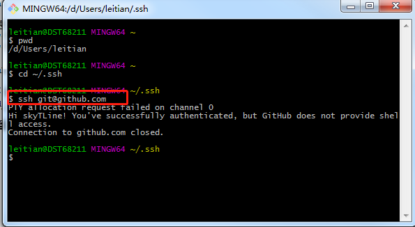

1.环境部署
1.1github
登录到GitHub，点击GitHub中的New repository创建新仓库，仓库名应该为：用户名.http://github.io 这个用户名使用你的GitHub帐号名称代替，这是固定写法。
skytline.github.io
1.2安装git
什么是Git ?简单来说Git是开源的分布式版本控制系统，用于敏捷高效地处理项目。我们网站在本地搭建好了，需要使用Git同步到GitHub上。
如果想要了解Git的细节，参看廖雪峰老师的Git教程：Git教程。
安装好之后，在菜单里搜索Git Bash，
设置user.name和user.email配置信息：
git config –global user.name “你的GitHub用户名”
git config –global user.email “你的GitHub注册邮箱”
生成ssh密钥文件：
ssh-keygen -t rsa -C “你的GitHub注册邮箱”
然后直接三个回车即可，默认不需要设置密码
然后找到生成的.ssh的文件夹中的id_rsa.pub密钥，
将id_rsa.pub内容全部复制,然后在github页面配置SSH keys：
在Git Bash中检测GitHub公钥设置是否成功，输入 ssh git@github.com ：

如上则说明成功。这里之所以设置GitHub密钥原因是，通过非对称加密的公钥与私钥来完成加密，公钥放置在GitHub上，私钥放置在自己的电脑里。GitHub要求每次推送代码都是合法用户，所以每次推送都需要输入账号密码验证推送用户是否是合法用户，
为了省去每次输入密码的步骤，采用了ssh，当你推送的时候，git就会匹配你的私钥跟GitHub上面的公钥是否是配对的，若是匹配就认为你是合法用户，则允许推送。这样可以保证每次的推送都是正确合法的。
1.3安装Node.js
Hexo基于Node.js,，注意安装Node.js会包含环境变量及npm的安装，安装后，检测Node.js是否安装成功，在命令行中输入 node -v :
检测npm是否安装成功，在命令行中输入npm -v :
npm是什么东东？
npm其实是Node.js的包管理工具（package manager）。
为啥我们需要一个包管理工具呢？因为我们在Node.js上开发时，会用到很多别人写的JavaScript代码。如果我们要使用别人写的某个包，每次都根据名称搜索一下官方网站，下载代码，解压，再使用，非常繁琐。于是一个集中管理的工具应运而生：
大家都把自己开发的模块打包后放到npm官网上，如果要使用，直接通过npm安装就可以直接用，不用管代码存在哪，应该从哪下载。更重要的是，如果我们要使用模块A，而模块A又依赖于模块B，模块B又依赖于模块X和模块Y，npm可以根据依赖关系，
把所有依赖的包都下载下来并管理起来。否则，靠我们自己手动管理，肯定既麻烦又容易出错。
到这了，安装Hexo的环境已经全部搭建完成。
1.4安装Node.js
Hexo就是我们的个人博客网站的框架， 这里需要自己在电脑常里创建一个文件夹，可以命名为blog，Hexo框架与以后你自己发布的网页都在这个文件夹中。创建好后，进入文件夹中，按住shift键，右击鼠标点击命令行:选择在此处打开命令窗口；
使用npm命令安装Hexo，输入：1
npm install -g hexo-cli
这个安装时间较长耐心等待，安装完成后，初始化我们的博客，输入：1
hexo init blog
然后依次：1
2
3
4cd blog
hexo new test_my_site
hexo g
hexo s
成功启动是这样的的：
这些命令在后面作介绍，完成后，打开浏览器输入地址：
localhost:4000
hexo常用命令：1
2
3
4
5
6
7
8
9
10hexo n "我的博客" == hexo new "我的博客" #新建文章
hexo g == hexo generate #生成
hexo s == hexo server #启动服务预览
hexo d == hexo deploy #部署
hexo server #Hexo会监视文件变动并自动更新，无须重启服务器
hexo server -s #静态模式
hexo server -p 5000 #更改端口
hexo server -i 192.168.1.1 #自定义 IP
hexo clean #清除缓存，若是网页正常情况下可以忽略这条命令
刚刚的三个命令依次是新建一篇博客文章、生成网页、在本地预览的操作。
如果想详细查看hexo s信息，则用命令：1
hexo s --debug
1.5部署github
上面只是在本地预览，接下来要做的就是就是推送网站，也就是发布网站，让我们的网站可以被更多的人访问。在设置之前，需要解释一个概念：1
2在blog根目录里的_config.yml文件称为站点配置文件;
在根目录里的themes文件夹，里面也有个_config.yml文件，这个称为主题配置文件；
下一步将我们的Hexo与GitHub关联起来，打开站点的配置文件_config.yml，翻到最后修改为：1
2
3
4deploy:
type: git
repo: git@github.com:/skyTLine/skyTLine.github.io.git
branch: master
保存站点配置文件。
其实就是给hexo d 这个命令做相应的配置，让hexo知道你要把blog部署在哪个位置，很显然，我们部署在我们GitHub的仓库里。最后安装Git部署插件，输入命令：1
npm install hexo-deployer-git --save
这时，我们分别输入三条命令：1
2
3hexo clean
hexo g
hexo d
- hexo g是生成静态的html文件，目录在public文件夹下，对应在文件夹2018/05/15(年目录/月目录/日目录); *
其实第三条的 hexo d 就是部署网站命令，d是deploy的缩写。完成后，打开浏览器，在地址栏输入你的放置个人网站的仓库路径，即 http://xxxx.github.io (知乎排版可能会出现”http://“字样，参考下图)
比如我的xxxx就是我的GitHub用户名：https://skytline.github.io/
你就会发现你的博客已经上线了，可以在网络上被访问了。1.6注意事项
1
2
3
4重要的事说三遍：
修改配置文件参数值时，一定要在冒号后面加一个空格！
修改配置文件参数值时，一定要在冒号后面加一个空格！
修改配置文件参数值时，一定要在冒号后面加一个空格！
注意看冒号后面的红点，我用的是NotePad++，红点代表一个英文空格！
1.7后续
未完，待续！
1.8参考链接
1.GitHub+Hexo 搭建个人网站详细教程：
https://zhuanlan.zhihu.com/p/26625249
2.Hexo中文官方文档：
https://hexo.io/zh-cn/docs/setup.html